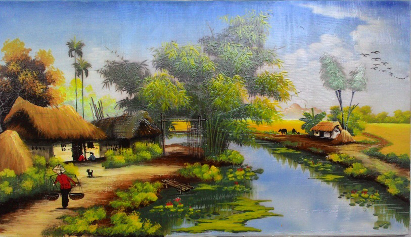
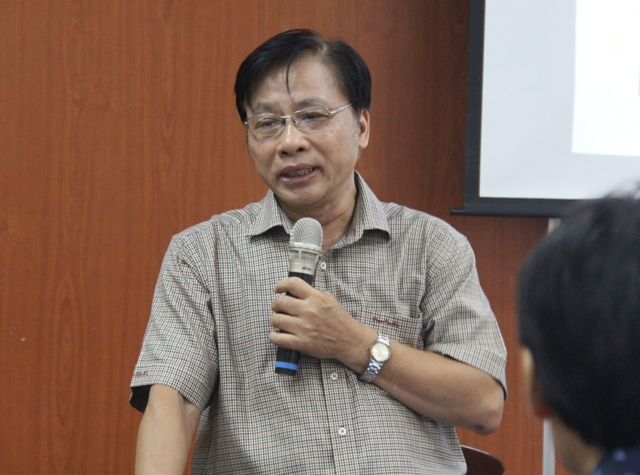
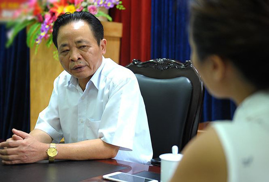
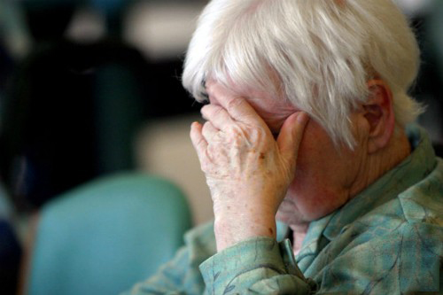
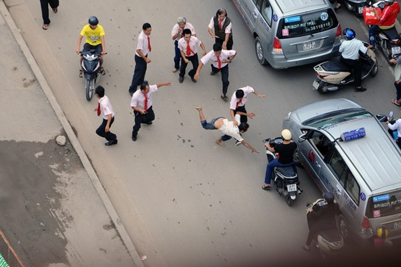
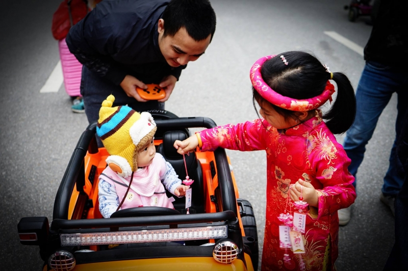

Với nhiều người ngoại quốc, Việt Nam là những bãi biển cát trắng tuyệt đẹp, là món Phở thơm đầy hương vị, là những ruộng bậc thang vàng óng ả, là cốc cà phê quyến rũ hơn hết thảy các loại cà phê trên thế giới…
Nhưng nước Việt đẹp nhất là con người Việt, là chủ thể tạo nên những giá trị cốt lõi nhất của một Việt Nam đầy khác biệt. Tổ quốc không phải chỉ là một mảnh đất, vài hòn đảo, nếu chỉ dồn mọi căm hận để đòi giữ chủ quyền lãnh thổ, chúng ta đã quên đi mất sức mạnh dân tộc thật sự đến từ đâu.
Trong cả bộ phim siêu anh hùng Thor – Tận thế Ragnarok, có lẽ những lời của thần Odin nói với Thor trước khi rời đi đã cởi nút thắt trong tâm Thor và cũng là những lời có ý nghĩa hơn cả: “Asgard không phải là một mảnh đất. Nó chưa bao giờ là một mảnh đất… Asgard là nơi người Asgard đứng”.
Nhà văn trẻ Lê Nguyễn Nhật Linh khi viết cuốn sách bán chạy hơn 10.000 cuốn về Nhật Bản cũng đã khẳng định ngay từ trang đầu tiên, “nước Nhật đẹp nhất của tôi chính là người Nhật”.
Và một minh chứng hùng hồn khác là những người Do Thái lang bạt, sau cả thế kỷ di chuyển, họ vẫn giữ được những giá trị cốt lõi của dân tộc Do Thái hùng mạnh. Cho tới khi được an cư, dù vẫn phải đối diện với những xung đột sắc tộc, nhưng họ đã làm nên những kỳ tích Israel trên mảnh đất khô cằn nhờ sức mạnh dân tộc tới từ văn hóa truyền thống đầy bản sắc của mình.
Rõ ràng, điều làm nên sức mạnh quốc gia không phải ở độ rộng lớn của mảnh đất mà chúng ta gọi là tổ quốc. Văn hóa chính là điều làm nên sức mạnh của mọi dân tộc hùng cường trên thế giới. Ở vị thế luôn phải gồng mình, khéo léo chống trả sự ức hiếp của ngoại bang, người Việt ngày nay lại đang tự đánh mất đi sức mạnh của mình bằng những thứ văn hóa mới mẻ nhưng đầy tính hủy diệt.

Giá trị duy nhất để chúng ta tôn vinh là Văn Hóa, nhưng hãy suy ngẫm lại từ khoảng chục năm gần đây, liệu chăng văn hóa của chúng ta đã có còn nguyên vẹn. (Ảnh: TDQ)
Văn hóa “Giả dối”
Có lẽ chưa bao giờ người Việt mất niềm tin vào nhau nhiều như thời nay. Sống trong một quốc gia mà chúng ta phải đề phòng, nghi ngờ từng nhánh rau, hột gạo mua ngoài chợ, cho đến tấm bằng tốt nghiệp của cả một thế hệ trẻ vốn là sức mạnh của tương lai dân tộc, thì liệu chúng ta có thể rộng lòng mà tin yêu những người xung quanh mình, thực lòng tin tưởng vào cộng đồng mà mình gọi là dân tộc?
Sự giả dối có mặt ở mọi nơi, ngay từ mảnh đất đáng nhẽ phải là trong sạch và thuần hậu nhất – Giáo dục. Đáng nhẽ đó phải là nơi ươm trồng nên những con người tốt trước khi trở thành người tài giỏi, nhưng các em lại được dạy phải chạy đua thành tích, phải đạt điểm tốt, danh hiệu, kết quả tốt bất chấp phương cách. Học là để sau này có điều kiện tốt mà kiếm nhiều tiền, để làm rạng danh gia tộc, làm bố mẹ nở mày nở mặt… chứ không phải là để làm người.
Giáo viên cũng không đặt cái nghề của mình ở vị trí thiêng liêng cao cả là dạy làm người, mà là nghề để kiếm miếng cơm manh áo. Doanh nghiệp, tổ chức tuyển người cũng không nhìn gì khác ngoài bằng cấp. Và cả xã hội chạy theo bằng cấp, hình thức trong khi ai cũng nhận ra sự phi lý mà chẳng thể thay đổi, bởi chúng ta đều chỉ cần được việc của mình là ổn rồi.
Một khảo sát xã hội vào năm 2008 của GS.TSKH Trần Ngọc Thêm – Giám đốc Trung tâm Văn hóa học lý luận và ứng dụng (ĐH Quốc gia Tp.HCM) đã chỉ ra, tỷ lệ nói dối ở học sinh cấp 1 là 22%, cấp 2 là 50%, cấp 3 là 64% và đến cấp đại học là 80%. Đó là những con số rất đáng báo động và đau lòng.

GS.TSKH Trần Ngọc Thêm – Giám đốc Trung tâm Văn hóa học lý luận và ứng dụng đã chỉ ra tỉ lệ nói dối ở bậc đại học lên tới 80%, vậy chăng chúng ta đang mất đi điều gì đó…(Ảnh: giaoduc.net)
“Trong một bài viết in trên báo Văn Nghệ số ra 10/01/1974, một nhà báo mỹ là Lady Borton kể rằng lúc đầu đến Việt Nam, bà có phần choáng ngợp trước một xã hội lành mạnh, mọi người rất ham đọc sách, rõ ra một xã hội có giáo dục. Còn giờ đây, bà được chứng kiến muôn điều tồi tệ. Một lần, tại một trong những trường đại học nổi tiếng nhất Hà Nội, bà dự buổi kiểm tra ở một lớp tiếng Pháp. Mọi sinh viên còn rất trẻ, người nào cũng lanh lợi. Thế mà lúc làm bài thi, chỉ thấy họ trổ ra mọi mánh lới man trá. Trong một giờ bà đã nhìn thấy những mánh lới nhiều hơn cả quãng đời trước đó của bà cộng lại, Lady Borton xem đây như một điều khủng khiếp”, tác giả Vương Trí Nhàn đã lấy ví dụ để minh chứng cho văn hóa giả dối từ trên học đường của thế hệ trẻ Việt Nam.
Từ giáo dục, cái nôi làm nên nhân cách con người, chúng ta đã được dạy về sự giả dối, nên đương nhiên sự giả dối sẽ là một phần của văn hóa chủ đạo của người Việt mới.
Quan chức thì chạy chức chạy quyền rồi sau đó phải tận lực vơ vét để “bù lỗ”, phải cho con em vào ngồi đầy công sở nào “ngon ăn”, vì làm quan không phải để lo cho dân mà là để kiếm thật nhiều tiền, để làm rạng danh dòng họ.
Người dân làm cái việc đơn giản hàng ngày như đi trên đường cũng phải vi phạm luật giao thông từ vài giây đèn đỏ cho tới trèo lên vỉa hè. Đơn giản hơn nữa, là xếp hàng mua đồ cũng phải chen ngang, lấn dọc, vào bệnh viện thì cũng đi cửa sau, làm dịch vụ cho nhanh… Sự chân thật không có chỗ khi văn hóa giả dối lên ngôi.

Gần đây nhất là sai phạm giáo dục tại Hà Giang, đăng trên tờ Lao Động có bài viết về nghi án giám đốc sở GD-ĐT Hà Giang “đánh một mẻ lớn” khi còn khoảng 72 ngày nữa là về hưu. (Ảnh: Lao Động)
“Ác” thay cho “Thiện”
“Thời xưa đi học… Học đến sách Minh tâm thì nhớ câu: ‘Cái mà mình không muốn, thì đừng làm cho người khác’” – (Trích Hà Nội thanh lịch), đó là lời cụ Hoàng Đạo Thúy chia sẻ trong cuốn sách cuối cùng của mình. Đó chính là cái đức Thiện của văn hóa truyền thống mãi luôn là kim chỉ nam đúng đắn cho con người mọi thời đại. Cái thời mà cụ nhắc đến đó cũng chỉ cách chúng ta khoảng 2 thế kỷ. Hơn 200 năm sau, những gì cổ nhân dạy đã được con cháu sáng tạo thành ngược lại hoàn toàn. Đó là làm gì cũng phải nghĩ đến bản thân trước tiên.
Cách đây chỉ vài chục năm, liệu có ai nghĩ được, cụm từ “người Việt đầu độc người Việt” lại trở nên phổ biến và không còn là điều gì quá sốc như bây giờ. Đến nông dân trồng rau cũng phân ra hai luống, một bên phun thuốc để đem bán cho đồng bào mình, một bên organic cho sạch sẽ để gia đình mình ăn. Thực phẩm sạch lên ngôi với giá đắt gấp 2, gấp 3 thực phẩm “bình thường”, mà đáng lẽ đồ sạch phải là điều đương nhiên người tiêu dùng được hưởng chứ không phải đặc cách dành cho người giàu.
Báo Tuổi trẻ ngày 22/03/2016 đăng một bản tin với cái tít gây sốc “Trên 6 triệu con heo xơi chất cấm vô bụng dân Việt”. Năm 2014, Tổ chức Y tế thế giới cho biết, mỗi năm ở Việt Nam có thêm 200.000 người mắc ung thư và 70.000 chết vì căn bệnh này. Với tỷ lệ đó, Việt Nam trở thành một trong những quốc gia hàng đầu thế giới về tỷ lệ mắc và chết vì ung thư. Nguyên nhân chính đến từ thực phẩm nhiễm bẩn. Nhưng dường như những thông tin như thế này không còn làm người Việt thấy choáng váng nữa, họ chỉ đơn giản là tự tìm cách bảo vệ mình hoặc tặc lưỡi cho qua và sống chung với lũ.
Năm 2016 trên tờ Tuổi Trẻ đưa tin hơn 6 triệu con heo xơi chất cấm vô bụng dân Việt, Người Việt đang đầu độc chính mình, chắc có lẽ thế mà tỉ lệ ung thư và các bệnh hiểm nghèo tăng chóng mặt. (Ảnh: Blikk)
Cái ác không chỉ thể hiện ở việc bất chấp mọi cách để làm giàu, chà đạp lên lợi ích của người khác với tầm nhìn ngắn ngủn vì chỉ thấy cái lợi của bản thân. Cái ác của người Việt ngày nay còn thể hiện ở mọi ngôn từ, lời nói, dù ở trên mạng xã hội nơi người ta không phân biệt nổi ảo và thật cho đến ngoài đời thường.
Truyền thông đầy rẫy những tít báo với từ ngữ như “bóc phốt”, “tố”, “ném đá”, “chơi khăm”, “không đội trời chung”, “thảm họa”… Ngôn từ của cả một thế hệ mới thì toàn “chém gió”, “chết đi!”, “ngu như…”, “mù à?”, “điên à?”, “thích chết à?”… Trên mạng xã hội thì đủ mọi cấp bậc của ngôn từ mang tính sát thương, người ta cũng sẵn sàng chửi bới nhau, mạt sát, thóa mạ, phán xét bằng lời cay nghiệt từ những chuyện nhỏ bé như anh chàng nào đó khoe khoang về độ sành điệu cho đến người này cướp chồng của người kia… Và tất nhiên với những vấn đề “nóng” trong xã hội, thì họ bàn luận bằng đủ loại góc nhìn, nhưng chẳng mấy khi có tính chất đóng góp, khách quan và rộng lượng.
Từ sự giả dối, ác mồm ác miệng, ác cả trong hành động vụ lợi chăm chút cho bản thân mặc kệ người khác, tất yếu sẽ đi kèm với một thứ văn hóa đầy tính thù địch khác.

Khi chúng ta đang lạc lõng giữ một xã hội đầy góc nhìn đấu tranh, đấu tranh vì điều này điều khác, vậy phải chăng ngôn từ của chúng ta cũng đang bị biến dạng méo mó. (Ảnh: Dinside).
“Tranh đấu” từ những điều nhỏ nhặt nhất
Xã hội Việt Nam sau mấy chục năm kết thúc chiến tranh, vẫn ám ảnh bởi sự tranh đấu đến kỳ lạ. Trên các phương tiện truyền thông và ở mọi ngõ ngách của cuộc sống thời bình, người ta vẫn dùng những từ như “chiến sĩ”, “mặt trận”, “xung phong”, “xung kích”, “đấu tranh”, “chiến đấu”… “Thi” thì phải đi kèm với “đua”, “phòng” thì phải đi đối với “chống”. Thật ra chỉ cần làm thật tốt hết sức những gì mình có thể thì sẽ đạt kết quả tốt, không cần phải đua với ai. Và những cái xấu tự nó cũng không thể tồn tại nếu ai cũng làm việc tốt, vậy sao cần chống cái xấu, mà không phải là làm thật tốt cái ta có thể làm được, cái xấu tự nó sẽ mất đi.
Ừ thì cứ cho là có thể dùng từ chống lại những thứ như tham nhũng, đói nghèo đi (mà thực tế là nó không thể tồn tại nếu con người không tạo ra nó, không biết chống là chống ai?)… nhưng ảo tưởng thành quen khi nghĩ có thể chống lại được cả thiên tai thì hiếm thấy có quốc gia nào. Vậy mà chúng ta vẫn “chống” cả lũ lụt từ bao lâu nay.
Hiện vẫn chưa rõ những thứ chúng ta hô chống lại đó có suy yếu được không, nhưng rõ ràng là tự chúng ta lại hình thành một tâm lý “kháng chiến”, phân định lằn ranh “địch – ta” với ngay chính những người xung quanh mình. Trong công tác thì phải đạt “chiến sĩ thi đua”, nỗ lực trong cuộc sống thì gọi là “phấn đấu”, như thể muốn vươn lên thì ta nhất định phải đấu với ai đó.
Với thứ văn hóa tranh đấu đó, chúng ta cảnh giác, hoài nghi và phán xét mọi sự khác biệt. Không có môi trường cho tinh thần khoan dung và sáng tạo phát triển. Người với người chỉ toàn hằm hè, thiếu tin tưởng và đố kỵ.
Người ta lo sợ khi chân thành tin tưởng vào điều mà lại bị lừa gạt, thì bản thân sẽ tổn thương sâu sắc. Càng chân thành càng bị tổn thương mãnh liệt, họ càng biểu hiện ra tâm lý cảnh giác cao độ, thậm chí đi đến cực đoan, không tin tưởng bất kỳ ai.

Người Việt trở nên hung hăng hơn, tưởng chừng như sự căng thẳng luôn hiện hữu và chỉ cần động đến cái tôi đó thì sẵn sàng động thủ, âu cũng vì cái Giả – Ác – Đấu đã ăn sâu vào trong tiềm thức, thay vì thông cảm, con người lại đấu đá lẫn nhau. (Ảnh: DNVN)
Người Việt thời nay hay phán xét thành công của người khác để giảm bớt cảm giác thua kém. Họ sẵn sàng chửi bới, hoặc nhẹ nhàng hơn thì cáu gắt khi chẳng may có ai đó chặn đường xe của mình. Họ chà đạp lên quyền lợi của người khác, chen lấn, cướp giật để tiến nhanh hơn hay đơn giản chỉ là để có được đồ ăn hạ giá.
Không cần phải dẫn chứng đầy đủ để chứng minh sự tồn tại của thứ văn hóa Giả – Ác – Đấu nói trên, bởi chỉ cần nhìn quanh môi trường chúng ta đang sống, những người chúng ta quen biết, bạn sẽ chắc chắn gặp một vài trường hợp của thứ văn hóa này đang hiện hữu trong cuộc sống hàng ngày.
Giả – Ác – Đấu là thứ văn hóa mang tính hủy diệt
Văn hóa giàu bản sắc, thuần thiện, tốt đẹp thì sẽ là sức mạnh của cả một dân tộc. Nhưng nếu là thứ văn hóa xấu xí, nó sẽ luôn là vật cản, ngăn trở con người hoàn thiện bản thân, phát triển xã hội bền vững, thịnh vượng. Với văn hóa Giả – Ác – Đấu, xã hội sẽ không khác gì một vườn thú, cạnh tranh, sinh tồn và đầy hỗn loạn. Bạn trách cứ người khác, lên án thực trạng xã hội, bạn lo lắng cho tương lai của con cái mình, thế nhưng mọi người ai cũng có góp chút sóng mà thành bão.
Chúng ta kêu gọi phải đoàn kết dân tộc, phát huy sức mạnh dân tộc, nhưng dân tộc với khái niệm ngay sát sườn là môi trường chúng ta đang sống thì lại là những con người mang trong mình văn hóa Giả – Ác – Đấu đến lạnh người. Nếu muốn đột phá, muốn vươn mình đứng dậy, tự tin bước ra thế giới, tự hào khi được nhắc tới là người Việt Nam, trước hết bạn phải loại bỏ thứ văn hóa mới mẻ nhưng đầy tính hủy diệt này.
Giả – Ác – Đấu chính là chống lại Chân – Thiện – Nhẫn, những giá trị nhân văn, phổ quát nhất của nhân loại mọi thời đại. Thay vì Chân thành, trung thực, người ta lại giả dối, lừa lọc. Thay vì Thiện lương, nhân ái, người ta lại ác độc, thâm hiểm. Thay vì Nhẫn nại, hòa ái, người ta lại đấu tranh, đầy hiềm khích. Thứ văn hóa mới đang ngang nhiên chống lại những điều đương nhiên mà con người phải có để có thể chung sống hòa bình và thịnh vượng, vậy thì tất nhiên nó sẽ là rào cản cho sức mạnh dân tộc.

Hãy bắt đầu từ những việc nhỏ, một ý thức vì người khác, bởi vì đơn giản: Khi ta tặng bạn hoa hồng tay ta còn vương mãi mùi hương. (Ảnh: ĐKN)
Vậy thì thay vì chỉ ngồi chửi rủa anh hàng xóm lớn mạnh đang ngày đêm gây hấn với chúng ta, thay vì nói xấu lẫn nhau, bêu rếu về người Việt xấu xí giữa làn sóng hội nhập đầy thách thức. Lòng yêu nước, tự hào dân tộc nên được hiện thực hóa từ những việc nhỏ nhặt nhất. Hãy cùng nhau dẹp bỏ thứ văn hóa Giả – Ác – Đấu, quay trở về với Chân – Thiện – Nhẫn để quy tụ sức mạnh.
Bởi một xã hội có Chân – Thiện – Nhẫn thì sẽ có sự ổn định, sự thịnh vượng, có môi trường tốt cho những đột khởi tích cực, và trên hết là có niềm tin. Khi tất cả mọi người dân đều tin tưởng lẫn nhau, tin tưởng vào quốc gia, vào những giá trị mà mình đại biểu và tin tưởng rằng làm điều tốt thì sẽ được đền đáp, thì đó chính là một tập thể hùng mạnh nhất.
Thuần Dương